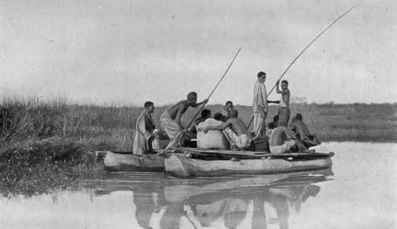

Chapter I. Remarks On Sport And Making A Home In The Bush
Description
This section is from the book "Wild Life In Central Africa", by Denis D. Lyell. Also available from Amazon: Wild Life in Central Africa.
Chapter I. Remarks On Sport And Making A Home In The Bush
British East Africa and Central Africa compared—Long-range shooting at game—Somali hunters compared with other natives—Life in a tent unhealthy—Village life and tropical pests—Rats—White ants—Fleas killing ducks and fowls—Bees and hornets—Snakes—Hut building— Cutting poles—Native bark string—Grass cleaning—Grass seeds— Knowledge of use to young colonists—The best type of man for a colonial life.
There are few countries among our British possessions that can offer a better field for the hunter or field-naturalist than do the territories in Africa known as Nyasaland and Northern Rhodesia, the latter formerly known as North-Eastern, and North-Western, but now under one administration. There the sportsman or traveller will, in the wilder parts of the country, see the land and people under primeval conditions, and the cost of such travel will not be so excessive as it has become in British East Africa, where wealthy men have foolishly squandered their superfluous wealth to the detriment of poorer, though often better, sportsmen than themselves. In 1911 I visited British East Africa, and I am bound to admit that it is a splendid game country, although the conditions of shooting on the plains are not nearly so sporting as they will be found in the country I am to write of in this volume. On the plains a man usually rides about on a pony or mule, and it is customary to fire very long shots at game; in fact, the animals there seem to have learned the range of modern rifles to a nicety, and it is difficult for the man who likes to take his shot at between 100 and 200 yards to get as close as that without much trouble.
With modern high velocity small bores, some of which shoot point-blank to about 300 yards, there is not a great difficulty in hitting a large animal like a zebra or wildebeest at that range, but it is more difficult to make good shooting on medium or small-sized animals, such as Grant's and Thomson's gazelles, and I, personally, think it a great shame that this long-range shooting should be practised, for many men who could not hit an i8in. bull at 400 or 500 yards think nothing of pumping several clips of cartridges into herds of animals at these absurd ranges. After killing a great quantity of African game, I have found that if an animal is much over 150 yards off it is a very difficult matter to discern the true angle at which it is standing, and if this cannot be ascertained it is nearly impossible to place the bullet in a vital spot, and so kill it neatly and humanely.
The eyesight of mankind is not capable of seeing true angles much over 150 yards, especially when using the ordinary open or peep sights usually fitted to sporting rifles, although a telescopic sight might be a help in doing so; but these sights are too bulky, and too easily damaged, and very few practical men with average eyesight use them.
In a later chapter I intend to write fully on sporting rifles, as I consider the subject one of great interest to all sportsmen. I also intend to treat of the natives further on, but I will mention here that I found the natives of British East Africa very poor hunters and trackers. The Somalis have proved themselves useful to sportsmen, and some of them are very plucky ; but so are many races of African natives, and bravery in danger is not the prerogative of any single race of mankind. Personally, I found the Somalis a veritable nuisance, as they do not get on well with the natives, and they are perpetually grumbling and wanting something. In fact, they have been so spoilt by kind and generous treatment that they expect to be treated like Europeans, so they demand, and receive, all kinds of luxuries such as flour, tea, sugar, ghee, salt, seasonings, rice, etc., not to mention European clothing, such as boots, putties, hats, shooting coats, and other things.
Crossing Bua River, Near Likasi, Central Angoniland
What a difference such a swaggering specimen of humanity presents to the Nyasaland or Northern Rhodesian tracker, with his yard or two of cloth or a skin round his loins, who tramps about on bare feet, and can often track game as well as a Bushman of the Kalahari Desert, and who is charmed if he is presented with an old worn out blanket and an empty flour tin to cook his porridge in.
The Central African gunbearer or tracker does not ask a tent, water bottle, cooking pot, or any of the luxuries expected by the Somalis, and neither does he get from 50 to 100 rupees a month, but is pleased with a humble fee of from four to six shillings and a yard of cloth, or some salt every week to buy food, though the old hand gives his men meat to barter with the villagers for their flour, sweet potatoes, ground nuts, etc.
It is known that the natives of British East Africa are the poorest trackers or hunters in any territory in Africa ; so I cannot understand why people praise them ; but then such Europeans cannot have hunted with really good native trackers in a bushed country or they would know better.
In Central Africa the game has often to be spoored, especially large antelopes such as eland, kudu, sable, and roan; and of course big game like elephants, rhino, and buffalo are nearly always tracked, as they are not often come on by chance.
This spooring work lends the chief interest to big game hunting, as anyone who is a fair shot can align a rifle barrel straight and kill game if he only keeps cool and gets close enough. In Central Africa most shots will be obtained at a distance of 150 yards or less, and I have not often found it necessary to fire at 300 yards or over, unless in the case of following up a wounded beast. This is, I think, the only excuse for long-range shooting, as all men deplore losing a hit animal, which will go off and be shunned and turned out of the herd by its comrades, and will eventually die a slow, painful death, unless it is killed by a lion, leopard, hyena, or pack of wild dogs.
Continue to: